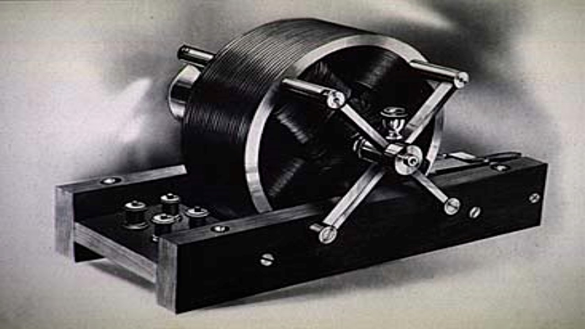

Godina: 1913.
Teslina turbina je centripetalna protočna turbina bez oštrice koju je patentirao Nikola Tesla 1913. godine. Naziva se turbinom bez lopatica. Teslina turbina također je poznata i kao granična turbina i kohezijska turbina jer koristi efekt graničnog sloja, a ne tekućinu koja nalijeće na lopatice kao u konvencionalnoj turbini. Istraživači bioinženjeringa nazivali su je centrifugalnom pumpom s više diskova. Jedna od Teslinih želja za primjenom ove turbine bila je geotermalna energija, što je opisano u "Motoričkoj moći naše budućnosti". Ideja vodilja za razvoj Tesline turbine jest činjenica da bi, kako bi se postigla najveća učinkovitost, promjene brzine i smjera kretanja fluida trebale biti što postupnije. Stoga se pogonski fluid Tesline turbine kreće prirodnim putovima ili strujnim linijama najmanjeg otpora. Tesla je napisao:
„Ova je turbina učinkovit samopokretački pokretač kojim se može upravljati kao parnom ili mješovitom fluidnom turbinom po volji, bez promjena u konstrukciji, i zbog toga je vrlo povoljna. Manji odstupi od turbine, kako se diktira okolnosti u svakom slučaju, očito će se sami predložiti, ali ako se izvrši na ovim općim linijama, smatrat će se vrlo isplativim za vlasnike parne elektrane, a istovremeno dopuštajući upotrebu njihove stare instalacije.“